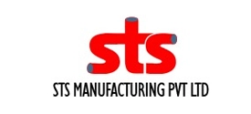

STP Manufacturer and Supplier
Best sewage treatment plant company
Ikon Smart Solution is the leading sewage treatment plant manufacturer and supplier in India delivering cost effective fully automated sewage treatment plants to various residential, commercial and industrial sectors.
About Ikon smart Solution
India's Top Rated Sewage Treatment Plant manufacturer (h2)
Ikon Smart Solutions have 15+ years of expertise in designing, manufacturing, and supplying smart sewage treatment plants ranging from 1KLD to 10MLD across India. We specialize in executing turnkey wastewater treatment plant projects tailored to industrial and commercial needs across India.
We are ISO certified STP Manufacturing company providing complete end-to-end service from consultation and installation to commissioning and Service for Sewage treatment plant to ensuring treated water meets safe disposal and reuse standards.
We manufacture and supply fully automated, high-efficiency STP systems based on Sequenced Batch Reactor (SBR) technology, suitable for a wide range of industrial applications. We have installed and executed STP systems across diverse industrial sectors, including pharmaceuticals, textiles, food & beverage, hospitality, healthcare, automotive, chemicals and manufacturing sectors.
Key Features of Smart Sewage Treatment Plant (STP) (H2)
As a leading manufacturer and supplier of Advanced Sewage Treatment plants in India, we deliver SBR-based STP systems built for efficiency, automation, and reliable performance.
| S/no | Features | Description |
|---|---|---|
| 1 | Advanced SBR Technology | Uses Sequenced Batch Reactor (SBR) process combines aeration and clarification in a single tank for efficient treatment. |
| 2 | Fully Automated Operation | Centralized smart controller manages the entire treatment cycle, reducing dependency on manual monitoring. |
| 3 | Airlift Technology | Replaces mechanical pumps for water transfer, sludge removal, and decantation which helps to minimize equipment failure and maintenance needs. |
| 4 | High Treatment Efficiency | Achieves treated water quality of BOD < 10 mg/l and COD < 50 mg/l. |
| 5 | Smart Alarm System | Digital monitoring detects abnormal functions and triggers alerts for proactive maintenance. |
| 6 | Scalable Capacity | Modular STP design supports a wide capacity range from 1 KLD to 10 MLD. |
| 7 | Energy Efficient | Smart Power Save mode adjusts operation based on tank filling levels, optimizing energy use. |
Advanced Sewage Treatment: Influent & Effluent Characteristics
We manufacture Sewage Treatment Plants (STP) that effectively treat raw sewage water, reducing BOD, COD, TSS and other pollutants to safe discharge levels.
| Parameter | Unit | Influent (Raw Sewage) | Effluent (Treated Water) |
|---|---|---|---|
| pH | - | 6.5 – 8.5 | 6.5 – 8.5 |
| BOD | mg/l | 300 | < 10 |
| COD | mg/l | 600 | < 50 |
| TSS | mg/l | 300 | < 10 |
| Oil & Grease | mg/l | 10 max | - |
| Turbidity | mg/l | - | < 2 |
Explore Our Completed STP Treatment Plant (H2)
Explore Our Customizable STP Plant Solutions
We offer a wide range of customizable STP systems, including packaged, MBBR, SBR, and tertiary solutions for efficient treatment and reuse.

STP System 500 KLD
Packaged STP
STP MBBR System
STP Blower
STP 50 KLD
STP Prefab 40 KLD
Aeration Tank
STP FRP PSF ACF UV Disinfection
STP 200 KLD
STP MBBR System
Trusted Manufacturer and Supply STP for Every Requirement (H2)
As a trusted sewage treatment plant supplier, we cater to the growing wastewater treatment needs of residential communities
- Gated communities are major users of STP systems for daily wastewater treatment
- A community of around 500 units apartments typically requires an STP capacity of 300 to 500 KLD
- Treated water is commonly reused for landscaping, toilet flushing, and road washing
We customize more than 100+ STP to commercial and institutional application as per their requirement.
- Hotels, hospitals and office campuses generate mixed wastewater requiring precisely sized systems
- A 200 room hotel typically needs an STP capacity of 100 to 150 KLD
- Hospitals require similar capacities but must handle both sewage and biomedical wastewater.
- Ikon Smart Solutions has delivered STP systems across hospitality and healthcare projects in India
Ikon Smart Solution is a leading STP manufacturer for the industrial sector, especially for pharma, textiles, and major factories and processing units.
- Factories and processing units generate effluent based on their production-linked water consumption
- Pharmaceutical units and dairy plants can produce 50 KLD to 100 KLD of high-load effluent daily
- At city scale, capacity is measured in MLD (Million Liters per Day)
- A municipality serving 50,000 people typically requires a 5 to 7 MLD STP
- Large facilities often use SBR technology to meet CPCB standards for discharge or reuse
Why Choose Ikon Smart STP System
Advantages of Ikon Smart Sewage Treatment Plant In India (H2)
As an Experienced STP Supply company, we handle end to end service for your STP project from feasibility studies and capacity planning to detailed design, equipment supply, civil work guidance, installation, and commissioning. Ikon smart solution also provides long-term Operation & Maintenance (O&M) support after installation. On top of this, we help with environmental compliance paperwork, including CPCB and SPCB approvals, so you get one single point of contact for the entire project.
- Fully automated operation with no dedicated operator required
- Odorless operation, suitable for urban and residential environments
- Up to 40% power savings due to energy-efficient design
- Minimal maintenance with remote monitoring capability
- Compact and space-saving modular system design
- Consistent treated water quality, always meeting government and pollution control norms
- Corrosion-resistant materials ensuring long operational life
- Eco-friendly output, allowing reuse of treated water for gardening, flushing, and other non potable applications
- Simplified mechanical design with only 2 pumps and 1 blower (compared to 8 or more in conventional systems)
- Excellent return on investment (ROI) with low lifecycle cost and high long-term value
What We Do Before Manufacturing Your STP
With over 15 years of experience, Ikon Smart Solutions is a trusted company in the design, manufacture, and installation of Advanced sewage treatment systems across India. We follow the steps below before starting manufacturing your STP project.
Estimate Daily Water Consumption
We calculate per capita water usage based on PCB guidelines or local municipal norms. For residential buildings, the standard estimate is 135 litres per person per day.
Calculate Sewage Generation
Sewage generation is typically 80% of total water supply. For example, a residential complex with 500 people consuming 135 litres each would generate approximately 54,000 litres (54 KLD) of sewage daily.
Apply a Safety (Peak) Factor
To handle peak-hour loads without disrupting the treatment process, we design plants with a safety margin of 1.25x to 1.5x the average daily flow.
Verify Local Compliance Norms
We check the minimum STP capacity required by local building approval authorities or environmental clearance conditions, since some states mandate specific KLD capacities based on plot size or unit count.
Get Expert Guidance
For larger or more complex projects, especially those requiring MLD-scale capacity our team at Ikon Smart Solutions ensures your plant is accurately sized, fully compliant and built to handle future growth.
Customized STP Manufacturers in India
At Ikon Smart Solutions, we understand every project is different according to its own space constraints, wastewater characteristics and regulatory requirements. As a leading customized STP manufacturer in India, we design and build customized sewage treatment plants tailored to residential, commercial and industrial needs.
Our engineering team begins with a detailed assessment of daily sewage generation, influent characteristics, available space for STP plant installation and local compliance norms. Based on this assessment, we configure the STP plant's capacity, layout from compact modular units for space-constrained urban sites to large-scale SBR based systems for high-load industrial applications.
With over 15 years of experience and ISO certification STP Company, we manufacture and supply STP systems ranging from 1 KLD to 10 MLD, ensuring the solution fits your exact requirements. Based in Bangalore, we deliver these tailored, future-ready custom STP solutions to clients across India.
Our Clients
